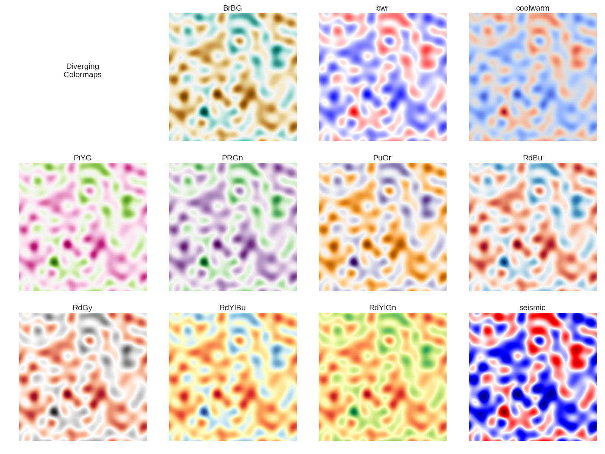
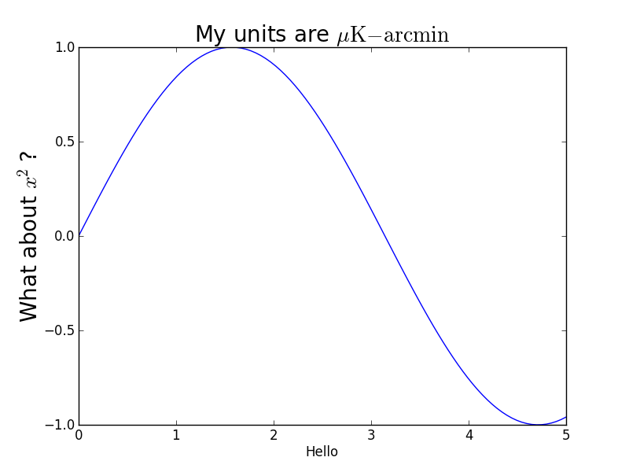
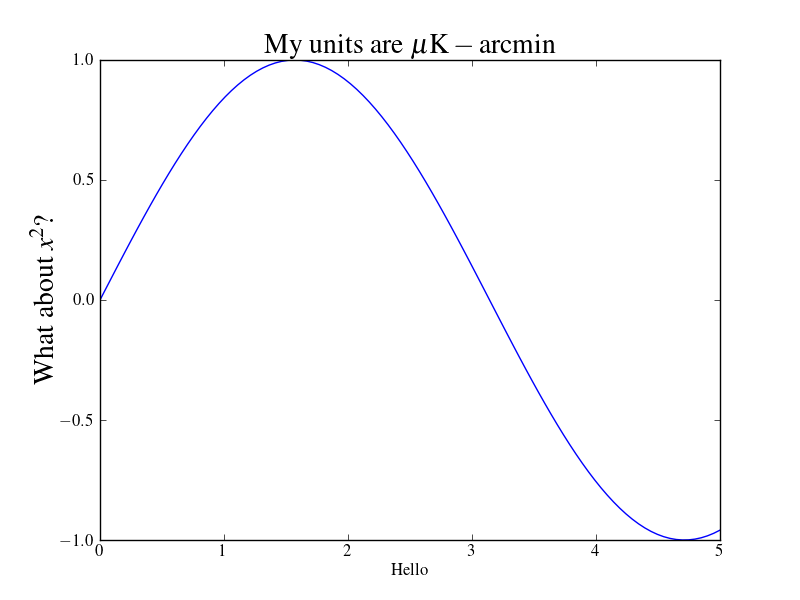
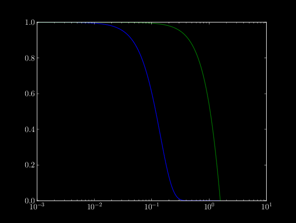

After a little bit of thought about how the default colormap, jet, kind of sucks for most purposes, I used the Matplotlib guide to colormaps to check out ones specifically for "diverging values", i.e. positive and negative values. I simulated a CMB map with power spectrum $1/\ell^2$, and visualized it with each of the diverging colormaps.

Based solely on the luminance profiles, BrBG, coolwarm, RdBu, RdYlGn are all the "best" in terms of having equal brightness for equally diverging values. Aesthetically, I like RdYlBu, seismic, RdBu, and coolwarm the best. Also everything with pink or purple looks pretty ugly.
Also a possible idea is custom colormaps using seaborn, where the center can be dark instead of bright. This doesn't generally look good, and is probably hard on printing, but it could be worth thinking about more.
This is something sort of silly to be proud of, but I found a way to change the default fonts in matplotlib into LaTeX, which took a little bit of
rooting around. Turns out the default file (in my case) that deals with these things is found in
home/dwatts/.local/lib/python2.7/site-packages/matplotlib/mpl-data//matplotlibrc. Most of the matplotlibrc
file is commented out for some reason, and I ended up using this
website to figure out what I was doing. The example matplotlibrc file seems to do the trick, except for the fact
that it doesn't have the backend set up. That's the main reason why I even used the default file at all (also so I
wouldn't have files randomly lying around).
I think the differences are pretty stark, and it definitely integrates with a document produced in LaTeX. I'll show before and after here.
 
A little subtle, but makes a big difference for my occasionally obsessive mind. Worth mentioning that I used the exact same code to make these two plots.
I also had a bit of trouble actually finding this file, the code that returned the matplotlibrc file is matplotlib.matplotlib_fname().
Just for fun, I decided to see how to change the color scheme. I ended up taking a working matplotlibrc file and adding the links as suggested in this forum post, which end up being;
lines.color: white
patch.edgecolor: white
text.color: white
axes.facecolor: black
axes.edgecolor: white
axes.labelcolor: white
xtick.color: white
ytick.color: white
grid.color: white
figure.facecolor: black
figure.edgecolor: black
savefig.facecolor: black
savefig.edgecolor: black
I made just one figure, but it's pretty striking. Might use this for presentations, or at least "figures in progress" for the paper I'm working on.

So I realized recently that Computer Modern isn't the default font for journals, and in fact it will change several times before publication. For $\mathrm{\LaTeX}$
documents, the best option is to just use a pgf file. This is slightly complicated, but for matplotlib it can be very easy. All you need to do is ensure you have a
pgf backend available to you, which should be the case in modern distributions. (I actually couldn't get it working when I installed via Enthought, but Anaconda
worked really nicely for me.) Anyway, here is the file that I used to make a test plot. Obviously you can change what specifically is
plotted, but once you have it you just take it to your document and type input.pgf, and your plot will be rendered in beautiful whatever-font-you-want.
Also, I took this code from a stackexchange post but don't recall which post it was. Sorry! If this ends up being a problem, I can find the real answer.